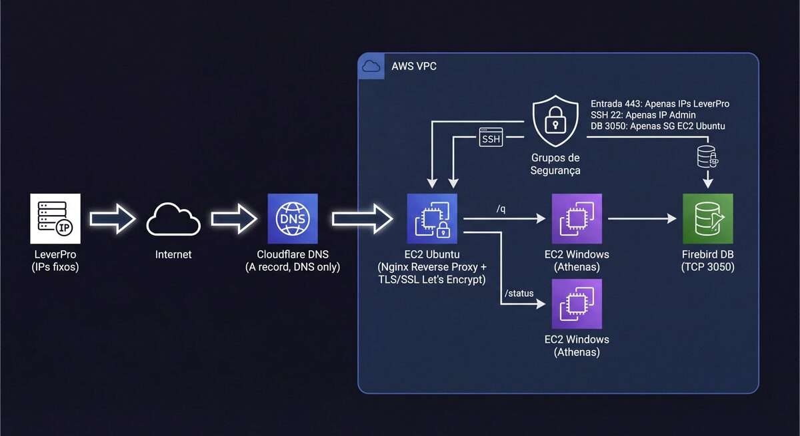
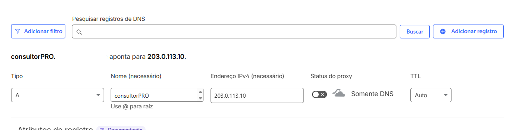
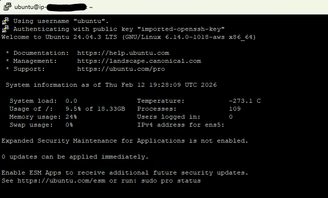
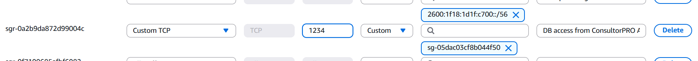

Objetivo
Arquitetura final (visão geral)
A ideia é separar "o que é público" (API) do "que é crítico" (banco). A API fica na internet, mas com acesso estritamente controlado. O banco fica dentro da VPC e só aceita conexão da VM da API.

Threat model (o que eu estava tentando evitar)
- Exposição: abrir a porta do banco para o mundo = convite para ataque e vazamento.
- Varredura e exploração da API: deixar 443 público = bots/scan 24/7.
- Acesso administrativo indevido: SSH público e sem restrição = brute force e tentativa de acesso.
- Configuração errada de DNS/SSL: certificado em domínio errado ou proxy ativado no Cloudflare = quebra de emissão/renovação.
- SSH (22) liberado apenas para meu IP
- HTTPS (443) liberado apenas para IPs fixos da empresa que irá acessar
- Banco (3050) liberado apenas para a EC2 da API (Security Group como source)
- Banco nunca público
Passo a passo
Abaixo está a sequência correta para você repetir sem retrabalho. O artigo vai até o ponto em que a infraestrutura está pronta, antes de instalar a API da Empresa fictícia ConsultorPRO.
0) Convenções e dados anonimizados
- Domínio fictício:
consultorPRO.exemplo.com - IP público fictício da EC2:
203.0.113.10 - IPs consultorPRO fictícios a serem liberados na minha instância:
198.51.100.10/32,198.51.100.11/32,198.51.100.12/32 - Porta do banco:
1234
Criar a EC2 Ubuntu (servidor da API)
- AWS Console → EC2 → Launch instance
- Nome:
api-consultorPRO-proxy - AMI: Ubuntu Server 24.04 LTS
- Instance type:
t3.micro(ajuste conforme carga) - Network: mesma VPC do servidor do banco
- Subnet: pública (para receber HTTPS)
- Auto-assign public IP: Enabled
Criar a Key Pair (.pem) para acesso SSH
Para acessar com segurança, criei uma chave dedicada. Em ambiente corporativo, evite compartilhar a chave "padrão" com terceiros. Se a ConsultorPRO precisar acesso, o ideal é criar um usuário e chave exclusivos (ou você executar os comandos).
- Na criação da instância: Create new key pair
- Tipo: RSA
- Formato: .pem
- Salvar em local seguro
Security Group inicial (bootstrap)
No início, eu preciso instalar pacotes, validar HTTP e emitir SSL. Então criei um SG temporário.
Inbound (temporário):
- SSH 22 → meu IP (/32)
- HTTP 80 → 0.0.0.0/0 (validação Let's Encrypt)
- HTTPS 443 → 0.0.0.0/0 (testes iniciais)[PRINT-04] Security Group inicial (bootstrap)
Print do SG mostrando SSH/80/443 (fase temporária).
Elastic IP (IP fixo)
- EC2 → Elastic IPs → Allocate Elastic IP
- Selecionar o Elastic IP → Actions → Associate → escolher a EC2
Caso não tenha IPs elásticos sobrando pode usar o privado mas saiba que se reiniciar a instância o IP irá mudar e você tem que se atentar a isso.
DNS no Cloudflare (subdominio → IP)
Type: A
Name: ConsultorPRO
Content: 203.0.113.10
Proxy: DNS only (cinza)
Validar DNS
nslookup consultorPRO.exemplo.comÉ necessário ver o IP sendo resolvido.
Acessar EC2 via SSH e atualizar
Você tem 2 opções a primeira é gerar a chave .ppk a partir da chave .pem e a outra é o modo abaixo. Ambos via PuTTY.
ssh -i api-access-key.pem ubuntu@consultorPRO.exemplo.com
sudo apt update
sudo apt upgrade -y
Instalar Nginx
sudo apt install nginx -y
sudo systemctl enable nginx
sudo systemctl start nginx
sudo systemctl status nginx --no-pagerEmitir SSL (Let's Encrypt)
sudo systemctl stop nginx
sudo apt install certbot -y
sudo certbot certonly --standalone -d consultorPRO.exemplo.com
sudo ls -la /etc/letsencrypt/live/consultorPRO.exemplo.com/
sudo systemctl start nginxConfigurar Nginx com HTTPS + endpoints preparados
Nginx config (sites-available)
server {
listen 80;
server_name consultorPRO.exemplo.com;
return 301 https://$host$request_uri;
}
server {
listen 443 ssl http2;
server_name consultorPRO.exemplo.com;
ssl_certificate /etc/letsencrypt/live/consultorPRO.exemplo.com/fullchain.pem;
ssl_certificate_key /etc/letsencrypt/live/consultorPRO.exemplo.com/privkey.pem;
location /status { proxy_pass http://127.0.0.1:3000/status; }
location /q { proxy_pass http://127.0.0.1:3000/q; }
location / {
return 200 "OK - HTTPS ativo. Aguardando deploy da API.\n";
add_header Content-Type text/plain;
}
}sudo ln -s /etc/nginx/sites-available/consultorPRO /etc/nginx/sites-enabled/consultorPRO
sudo nginx -t
sudo systemctl restart nginxDescobrir porta do banco
netstat -ano | findstr LISTENINGLiberar PORTA no SG da instância do BANCO só para o SG da EC2 da API
Type: Custom TCP
Port: 3050
Source: Security Group da EC2 API (sg-api-consultorPRO-proxy)
Fechar o SG da API (estado final): Liberar os IPs da empresa ConsultorPRO na instância linux
Você vai remover todos os ips que estavam liberados e deixam somente o SSH pra você e os IPs requisitados pela empresa.
SSH 22 → meu IP (/32)
HTTPS 443 → IPs fixos consultorPRO (/32)Validações e testes antes do deploy da API
| Teste | Comando / Ação | Resultado esperado |
|---|---|---|
| DNS | nslookup consultorPRO.exemplo.com |
Resolve para o Elastic IP correto |
| HTTPS | Abrir: https://consultorPRO.exemplo.com |
Certificado válido, resposta 200 |
| Conectividade EC2 → Banco | nc -zv 10.0.2.25 PORTA |
Connection succeeded |
Decisões de design (por que fiz assim)
Porque eu preciso de um ponto controlado para expor HTTPS e aplicar política de rede (allowlist) sem tocar direto no servidor do Athenas. Linux + Nginx = simples, barato, previsível e fácil de auditar.
Nginx me dá TLS confiável, logs, reverse proxy e flexibilidade para publicar apenas os endpoints necessários (/status e /q),
mantendo a aplicação atrás de uma porta interna.
Resolve SSL de forma prática e padronizada. Em produção, o mais importante é ser válido e renovável sem manual.
É o requisito. E é uma defesa direta contra varredura/ataque: mesmo que o domínio seja público, ninguém fora da lista chega na API.
Isso elimina exposição acidental. A porta 3050 do Firebird fica aberta apenas para o "identificador" da VM da API (Security Group),
não para a internet e nem para sub-redes inteiras.
Durante bootstrap (instalar Nginx/Certbot, validar DNS/HTTP-01, testar TLS), é comum abrir temporariamente. Mas a regra é: abrir só o mínimo, por pouco tempo, e fechar imediatamente. O estado final tem que ser restrito.
O que eu preciso da consultorPRO agora
- Pacote da API (ou Docker) e instruções
- Porta interna que a API usa (para ajustar proxy)
- Parâmetros/segredos (string de conexão, user read-only, etc.)
Lições aprendidas
- Ping não prova HTTPS. DNS + 443 + certificado provam.
- Proxy Cloudflare pode afetar emissão/renovação (planeje).
- SG como source exige mesma VPC.
- Bootstrap aberto é temporário e tem que virar "estado final restrito".
Checklist final para produção
| Categoria | Item |
|---|---|
| Rede & DNS | Domínio resolve para Elastic IP correto |
| Rede & DNS | DNS only durante SSL (se usando HTTP-01) |
| Segurança | 443 só para IPs consultorPRO |
| Segurança | 22 só para seu IP |
| Segurança | 3050 só para SG da EC2 API |
| HTTPS | Certificado válido |
| HTTPS | nginx -t sem erro |
| Deploy | Nginx preparado para /status e /q |
| Deploy | Conectividade com banco testada |
Observação: todos os IPs/nomes/domínios neste artigo foram anonimizados.